Esna 103
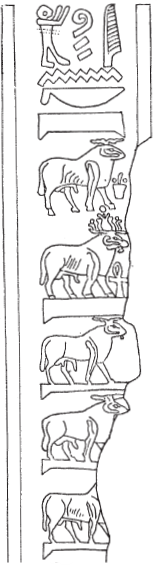
1ỉȝw n=k
pȝ bȝ ʿȝ ʿnḫ
ḥry nṯr.w
1 Praise be unto you,
o great living Ba,
chief of the gods.
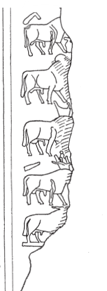
ẖnmw-Rʿ nb tȝ-s[n.t]
Khnum-Re Lord of E[sna].
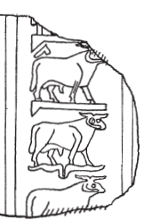
[msỉ?] nṯr.w
qdỉ ʿ[w.t]
[Who birthed] the gods,
who built live[stock] (?)
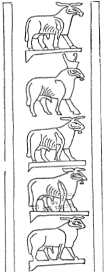
2nṯr nb nṯr.w
2 God, Lord of Gods.
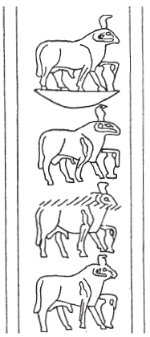
ẖnmw nb ẖnmw.w
Khnum, Lord of Khnums.
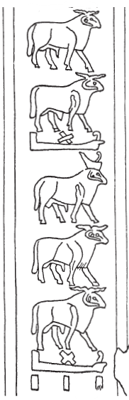
qdỉ nb qdỉ.w
Builder, Lord of Builders
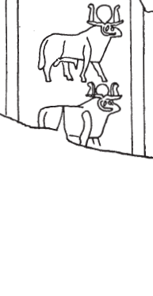
tȝ-ṯnn ṯnỉ [r nṯr.w]
Tatenen, most distinguished [of the gods].
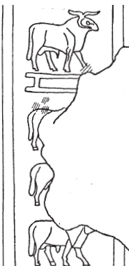
kȝ(?) mrỉ snsn(?)
Bull(?), who loves coupling(?).
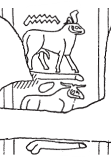
wsn ỉr nḏmnḏm
Lusty ram who makes sexual pleasure.
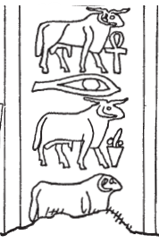
bȝ ʿnḫ ỉr bȝ[.w…]
Living Ba, who made the Ba[s…]
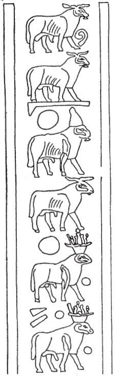
wbn sḥḏ tȝ.wy
He who shines, and illumines the two lands.
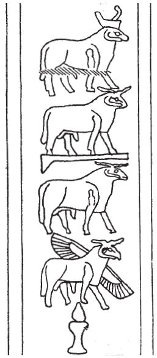
nb nḥp
Lord of the Potter’s Wheel.
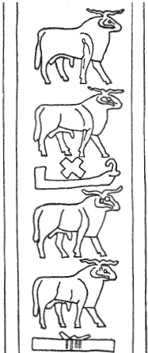
qdỉ nty
He who built that which is.